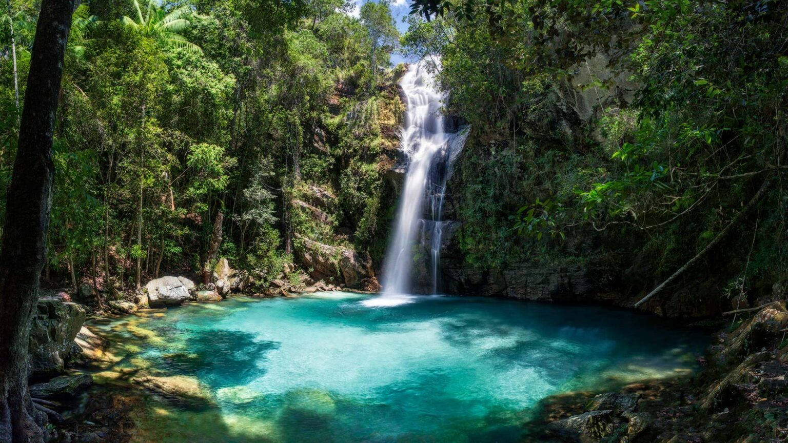
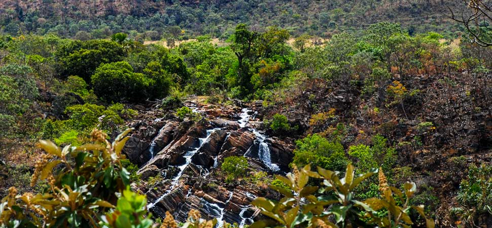
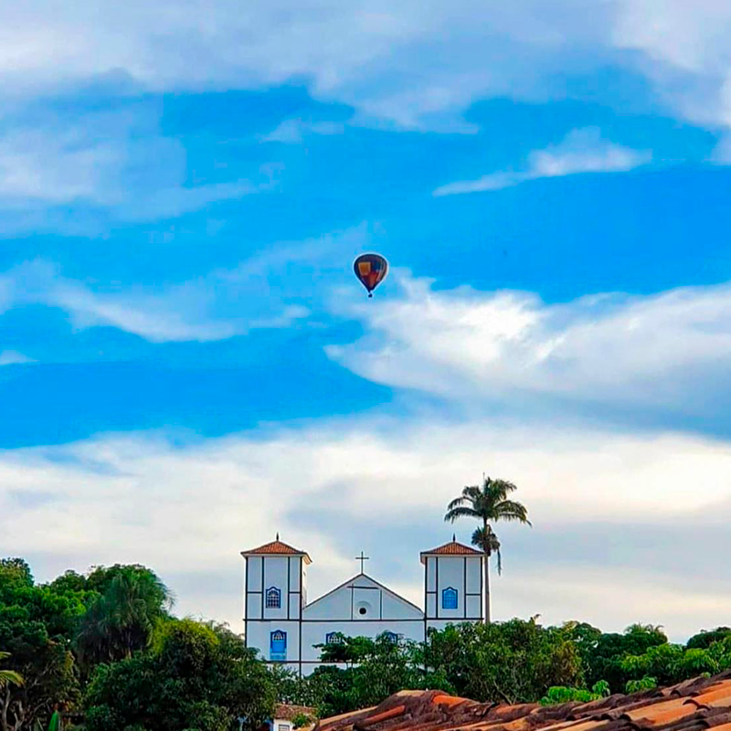

- Cachoeira do Abade
- Parque Estadual dos Pireneus
- Passeio de balão

As cachoeiras dos arredores de Pirenópolis são algumas das atividades mais atrativas para os turistas, elas possuem uma beleza deslumbrante, fauna e flora típicas do cerrado brasileiro e fornecem um contato direto com a natureza.
O principal ponto para quem quer experimentar tudo isso é na Cachoeira do Abade e ela não é a única, já que várias cachoeiras estão concentradas nessa região(Cânion, Landi e Sossego). Nelas é possível aproveitar trilhas, caminhadas, passagens por pontes e rios, contato com os animais da área e principalmente elas em si.
A área possui estacionamento gratuito, banheiros, segurança, lanchonetes e muito mais, sendo perfeito para ir com crianças e idosos, além de que é uma trajetória extremamente encantadora e divertida.
Vale destacar também a Ponte Tremedeira e o Mirante das Andorinhas que fazem parte do território da cachoeira, pois possuem paisagens belíssimas que valem a pena conferir.
O lugar funciona todos os dias das 9hrs às 16hrs e está localizada a cerca de 22km da cidade disponível para todas as idades.

O Parque Estadual dos Pireneus é o destino para quem gosta das formações naturais, como morros, rochas e vegetação. Ele se encontra no topo de uma cordilheira e possui mais de 2800 hectares de território.
As principais atividades são a cidade de pedra, conhecida pelos labirintos rochosos, o Morro do Cabeludo que é usado principalmente para escalada, e o Pico dos Pireneus que é o topo do lugar com 1388m de altitude e onde tem uma capela católica.
O passeio é totalmente gratuito, e existe para preservar a memória do local e proteger a paisagem.

O passeio de balão é bastante tradicional na cidade, já que contempla a vista de Pirenópolis e de toda região, com todas as suas belezas.
Não é um passeio barato, mas se você tiver coragem de se arriscar um pouco mais com certeza vai valer a pena.